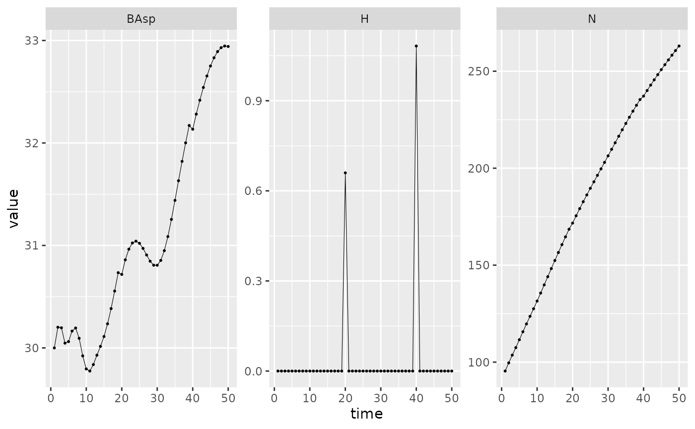
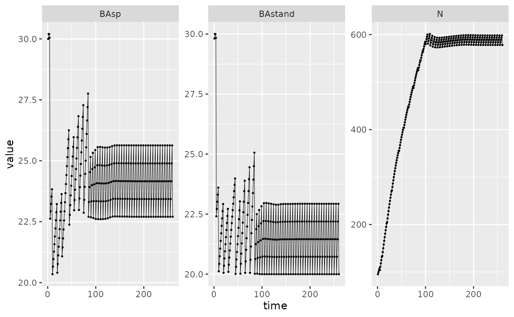

This vignette illustrates how to use harvesting scenarii with
{matreex} package. An harvesting scenario provides the
rules and the periodicity to trigger harvesting of trees in each size
classes. The harvested trees are saved and exported for each simulation
time step.
The basic {matreex} functions are shown in a previous introduction vignette.
Simulations input
Define a species
The first step is the IPM integration. This part is common with basic usage of the package, so nothing is very important here.
Please keep in mind this computation is intensive and may take few minutes !
library(matreex)
library(dplyr)
#>
#> Attaching package: 'dplyr'
#> The following objects are masked from 'package:stats':
#>
#> filter, lag
#> The following objects are masked from 'package:base':
#>
#> intersect, setdiff, setequal, union
library(ggplot2)
# Load fitted model for a species
# fit_species # list of all species in dataset
data("fit_Picea_abies")
# Load associated climate
data("climate_species")
climate <- subset(climate_species, N == 2 & sp == "Picea_abies", select = -sp)
# see ?climate_species to understand the filtering of N.
climate
#> sgdd wai sgddb waib wai2 sgdd2 PC1
#> 62 1444.667 0.4519387 0.0006922012 0.6887343 0.2042486 2087062 1.671498
#> PC2 N SDM
#> 62 0.02602064 2 0.6760556
Picea_ipm <- make_IPM(
species = "Picea_abies",
climate = climate,
fit = fit_Picea_abies,
clim_lab = "optimum clim",
mesh = c(m = 700, L = 90, U = get_maxdbh(fit_Picea_abies) * 1.1),
BA = 0:70, # Default values are 0:200, smaller values speed up this vignette.
verbose = TRUE
)
#> Launching integration loop
#> GL integration occur on 32 cells
#> midbin integration occur on 25 cells
#> Loop done.
#> Time difference of 1 minsHarvesting scenario are defined at different levels: at the species level with the species harvesting function and its associated parameters, at the forest level with a set of parameters, and at the simulation level with the target of the harvesting scenario. Depending on the scenario used, not all the parameters are used. The table below summarise the required parameters for each scenario. Each scenario have an example in the following document.
| Harvesting scenario | Species harvesting function | Species parameters | Forest parameters | Simulation parameters |
|---|---|---|---|---|
| default |
def_harv() or custom by user. |
\(\emptyset\) | harv_rules["freq"] |
\(\emptyset\) |
| Uneven | Uneven_harv() |
harv_lim |
harv_rules |
targetBA |
| Even in active dev |
Even_harv() |
rdi_coef |
harv_rules
|
targetRDI targetKg
|
Short example : When using an Uneven scenario, each species needs to
use the Uneven_harv() function with harv_lim
parameters. The forest will need to have harv_rules
parameters. The sim_deter_forest() require
targetBA argument. If targetRDI is defined, it
will not be used.
Default scenario
Presentation
The default scenario is based on Kunstler et al. (2021). This mean there is a constant harvest rate triggered each year. This harvest rate is uniform over the size distribution. This is the scenario used by default.
This rate is coded in def_harv() function as shown below
and the frequency (each year) is given in
harv_rules["freq"]. Note that the harvesting is applied to
all size class except the age-classes used in delay (with
* (ct > 0)).
def_harv
#> function (x, species, ...)
#> {
#> dots <- list(...)
#> ct <- dots$ct
#> rate <- 0.006 * (ct > 0)
#> return(x * rate)
#> }
#> <bytecode: 0x56155f62a5c0>
#> <environment: namespace:matreex>
Picea_sp <- species(IPM = Picea_ipm, init_pop = def_initBA(30))
Picea_for <- forest(species = list(Picea = Picea_sp),
harv_rules = c(Pmax = 0.25, dBAmin = 3,
freq = 1, alpha = 1))With this scenario, the simulation can be launched without any additional parameter.
set.seed(42) # The seed is here to replicate the random population initialisation.
Picea_sim <- sim_deter_forest(
Picea_for,
tlim = 200,
equil_time = 200, equil_dist = 10, equil_diff = 1,
harvest = "default", # this is the default value but we write it.
SurfEch = 0.03,
verbose = TRUE
)
#> Starting while loop. Maximum t = 200
#> Simulation ended after time 200
#> BA stabilized at 43.98 with diff of 1.16 at time 200
#> Time difference of 1.49 secsOnce the simulation is done, we can extract the basal area and the number of individual at each step of the simulation, but also a new variable \(H\). This is the sum of density of harvested trees at each time step. The density of harvested trees is also exported for each size mesh \(h_i\).
In this case, \(H\) is correlated with \(N\) since it’s a constant percentage not linked with a size distribution. The first step being the initialization step, it’s normal to have no harvest.
Picea_sim %>%
dplyr::filter(var %in% c("BAsp", "N", "H"), ! equil) %>%
ggplot(aes(x = time, y = value)) +
facet_wrap(~ var, scales = "free_y") +
geom_line(linewidth = .2) + geom_point(size = 0.4) Modulation
This section will just illustrate variation of the default scenario. First we modify the frequency of the harvest. When the harvest is not triggered, the value returned is 0.
set.seed(42) # The seed is here for initial population random functions.
Picea_sim_f20 <- sim_deter_forest(
forest(species = list(Picea = Picea_sp),
harv_rules = c(Pmax = 0.25, dBAmin = 3,
freq = 20, alpha = 1)),
tlim = 50,
equil_time = 50, equil_dist = 10, equil_diff = 1,
harvest = "default",
SurfEch = 0.03,
verbose = TRUE
)
#> Starting while loop. Maximum t = 50
#> Simulation ended after time 50
#> BA stabilized at 32.85 with diff of 0.78 at time 50
#> Time difference of 0.373 secs
Picea_sim_f20 %>%
dplyr::filter(var %in% c("BAsp", "N", "H"), ! equil) %>%
ggplot(aes(x = time, y = value)) +
facet_wrap(~ var, scales = "free_y") +
geom_line(linewidth = .2) + geom_point(size = 0.4) 
A more advanced modification of the harvest function is ilustratted
below. Obviously, this type of modification have not been thoroughly
tested and thus is more prone to error so don’t hesitate to contact
{matreex} maintainer in case of trouble. For example, we
add a function where we multiply a constant rate with the mesh, meaning
that the larger the tree get, the higher the harvesting rate of its size
class.
Picea_harv <- Picea_sp
Picea_harv$harvest_fun <- function(x, species, ...){
dots <- list(...)
ct <- dots$ct
rate <- 6e-4 * (ct > 0) * species$IPM$mesh
return(x * rate)
}
set.seed(42) # The seed is here for initial population random functions.
Picea_sim_f20 <- sim_deter_forest(
forest(species = list(Picea = Picea_harv),
harv_rules = c(Pmax = 0.25, dBAmin = 3,
freq = 20, alpha = 1)),
tlim = 250,
equil_time = 250, equil_dist = 10, equil_diff = 1,
harvest = "default",
SurfEch = 0.03,
verbose = TRUE
)
#> Starting while loop. Maximum t = 250
#> Simulation ended after time 250
#> BA stabilized at 28.20 with diff of 5.02 at time 250
#> Time difference of 1.9 secs
Picea_sim_f20 %>%
dplyr::filter(var %in% c("BAsp", "N", "H"), ! equil) %>%
ggplot(aes(x = time, y = value)) +
facet_wrap(~ var, scales = "free_y") +
geom_line(linewidth = .2) + geom_point(size = 0.4) Uneven scenario
Theory
Uneven-aged harvest scenario consist in harvesting trees in all size classes with the objective to reach a stable size structure with continuous replacing of large mature trees. This scenario depends on the basal area of the stand and the size distribution of the tree. This should lead to stands with uneven size distribution.
Monospecific case
Harvest proportion
We note \(P_{cut}\) the global harvest proportion which will determine the amount of basal area to be cut and harvested.
\[ P_{cut} = \left\lbrace \begin{array}{ll} 0 & if (BA_{stand} - BA_{target}) < \Delta BA_{min}\\ min(\frac{BA_{stand}-BA_{target}}{BA_{stand}}, P_{max}) & if (BA_{stand} - BA_{target}) \geq \Delta BA_{min} \end{array} \right\rbrace \]
For example, some numerical values of the parameters can be \(\Delta BA_{min} = 3 m^2ha^{-1}\), \(BA_{target} = 20, 25\) or \(30 m^2ha^{-1}\) (depending on species) and \(P_{max} = 0.25\).
Note that stand basal area \(BA_{stand}\) is computed only considering trees with a dbh above \(d_{th}\) (see below).
Harvest curve
Each tree harvest probability only depends on its diameter (\(d\)). There is a minimum diameter for harvest (\(d_{th}\)), harvest probability then increases with diameter until \(d_{ha}\) after which harvest probability is constant.
We therefore considered the harvesting function (which associates a dbh to an harvesting probability)
\[ h(d) = \left\lbrace \begin{array}{ll} 0 & \text{if } d < d_{th} \\ h_{max} (\frac{d - d_{th}}{d_{ha} - d_{th}})^{k} & \text{if } d_{th}\leq d < d_{ha} \\ h_{max} & \text{if } d \geq d_{ha} \end{array} \right\rbrace \]
The maximum harvesting for large tree \(h_{max}\) can be tuned so that the probability for a large tree to be harvested approaches 1 after several harvesting operations: \(h_{max} = 1 - \sqrt[n]{1-p}\) with \(n\) the number of harvesting operations. Parameter \(k\) defines how quickly the harvesting rate increase from \(d_{th}\) to \(d_{ha}\).
Harvest curve example, \(d_{th} = 17.5cm\), \(d_{ha}=57.5cm\), \(h_{max}=0.8\), \(k=2\).
Harvesting algorithm
The algorithm only target tree contributing to \(BA_{stand}\), that is the trees above \(d_{th}\)
Given \(\phi(x)\) the density function of diameters, the basal area harvested is
\[ BA_{harv} = BA_{th} + BA_{ha} \] with \[ BA_{ha} = h_{max} \pi/4\int_{d_{ha}}^{d_{max}}x^2 \phi(x)dx \]
\(\bullet\) If \(BA_{ha} >= P_{cut} \times BA_{stand}\), there is enough large trees (diameter above \(d_{ha}\)) so that the harvest will only concern large trees and \(BA_{th} = 0\).
We then find \(d_t\) (with \(d_{ha} < d_t < d_{max}\)) such that:
\[ BA_{ha} = h_{max} \pi/4
\int_{d_{t}}^{d_{max}}x^2 \phi(x)dx = P_{cut} \times BA_{stand}\]
Thus, the {matreex} package will cut the larger trees until
\(P_{cut} \times BA_{ha} - targetBA <=
0\).
\(\bullet\) If \(BA_{ha} < P_{cut} \times BA_{stand}\), we first harvest \(BA_{ha}\) and then compute \(k\) such as: \(BA_{th} = P_{cut} \times BA_{stand} - BA_{ha}\). Note that
Multispecific case
As in the monospecific case, we define the global harvest rate \(P_{cut} = \frac{BA_{harv}}{BA_{stand}}\).
Here, \(BA_{stand}\) is divided between \(s\) species: \(BA_{stand} = \sum_{i=1}^{s} BA_{stand, i}\) and \(BA_{harv} = \sum_{i=1}^{s} BA_{harv, i}\)
We note \(p_i = \frac{BA_{stand, i}}{BA_{stand}}\) and \(P_{cut, i} = \frac{BA_{stand, i} - BA_{harv, i}}{BA_{stand, i}} = f(p_i) * P_{cut}\)
We suppose that harvesting rate increases with abundance (we harvest preferentially trees with the highest proportion), which means \(f\) is an increasing function.
By definition,
\[ \begin{array}{ll} BA_{harv} & = \sum_{i=1}^{s} BA_{harv, i} = \sum_{i=1}^{s} BA_{stand, i} * (1 - P_{cut, i}) \\ & = BA_{stand} \sum_{i=1}^{s} p_i * (1 - f(P_i) P_{cut}) \\ & = BA_{stand} (1 - P_{cut}) \\ \end{array} \]
So that we have the constraint on \(f\): \(\sum_{i=1}^{s} p_i (1-f(p_i)P_{cut}) = 1 - P_{cut} \sum_{i=1}^{s} p_i f(p_i) = 1-P_{cut}\)
which is equivalent to \(\sum_{i=1}^{s} p_i f(p_i) = 1\)
The case \(f(p_i) = 1\) works, which leads to \(P_{cut,i} = P_{cut}\). In that case the harvest rate is the same for every species \(i\).
More broadly, we can use the function \[f(p_i) = \frac{p_i^{\alpha - 1}}{\sum_{i=1}^{s} p_i ^{\alpha}}\], \(\forall \alpha > 0\)
For \(\alpha = 2\), we for example have
\[f(p_i) =\frac{p_i}{\sum_{i=1}^{s} p_i ^2} \] To sum up, if\(\alpha = 1\), an abundant species will be more harvested, in effort to reach an equi-abundance of the species. For \(\alpha < 1\), the abundant species will be less harvested. Finally, for \(\alpha > 1\) the most abundant species will be harvested more, in a greater proportion than 1.
Examples
All the parameters described above are input either in the
species(), forest() or
sim_deter_forest() functions. Additional parameter
dBAmin is the difference between BA and
targetBA under which an harvesting will not be
triggered.
When plooting the result, keep in mind the difference between
BAsp and BAstand. Only the second one will
match with targetBA, since during uneven harvesting, trees
below dth are excluded from computations.
Picea_Uneven <- species(IPM = Picea_ipm, init_pop = def_initBA(30),
harvest_fun = Uneven_harv,
harv_lim = c(dth = 175, dha = 575, hmax = 1))
Picea_for_Uneven <- forest(species = list(Picea = Picea_Uneven),
harv_rules = c(Pmax = 0.25, dBAmin = 3,
freq = 5, alpha = 1))
set.seed(42) # The seed is here for initial population random functions.
Picea_sim_f20 <- sim_deter_forest(
Picea_for_Uneven,
tlim = 260,
equil_time = 260, equil_dist = 10, equil_diff = 1,
harvest = "Uneven", targetBA = 20, # We change the harvest and set targetBA.
SurfEch = 0.03,
verbose = TRUE
)
#> Starting while loop. Maximum t = 260
#> Simulation ended after time 260
#> BA stabilized at 22.55 with diff of 2.89 at time 260
#> Time difference of 1.83 secs
Picea_sim_f20 %>%
dplyr::filter(var %in% c("BAsp", "BAstand", "N"), ! equil) %>%
ggplot(aes(x = time, y = value)) +
facet_wrap(~ var, scales = "free_y") +
geom_line(linewidth = .2) + geom_point(size = 0.4) 
We notice that the basal area obtained by the simulation is higher than the targeted one. This can be explained by the fact that the cutting calculation is done on \(BA_{stand}\), which does not take into account individuals smaller than \(d_{th}\).
Even scenario
The objective of even harvesting is to grow trees with the same age until they reach a self-thinning boundary and cut all of them at this stage. This self-thinning boundary is given for each species following :
\[N_{max} = e^{intercept+slope \cdot
log(Dg)}\] The species parameters are given in Aussenac et al. (2021) and inside the package with
rdi_coef table. \(Dg\) is
the mean quadratic diameter of trees.
data(rdi_coef)
rdi_coef <- drop(as.matrix(
rdi_coef[rdi_coef$species == "Picea_abies",c("intercept", "slope")]
))
rdi_coef
#> intercept slope
#> 12.875790 -1.762061From this, we can compute the density index \(DI = N / N_{max}\) with \(N\) the number of stems.
During the growth process, trees below the mean quadratic diameter \(Dg\) are cut. The magnitude of this cut is given with \(Kg\), the ratio between the mean quadratic diameter of killed trees \(Dg_d\) and the mean quadratic diameter \(Dg\) :
\[Kg = Dg^2_d / Dg^2\]
The algorithm present in Even_harv is triggered if \(DI > targetRDI\) and optimise two
parameters \(h_{max}\) and \(k\) for a cut probability curve to reach
\(targetKg\) and \(targetRDI\).
\[Pcut_i = hmax * i^{-k}\]
Harvest curve example with various combination of hmax and k
The last parameter for an even harvested simulation is the final cut
time. The stand will be harvested with the previous rules at a given
frequency but at a certain point, the manager will harvest all trees and
plant new ones. This time is dependant on the species growth and
differents targets. The value is named final_harv in
sim_deter_forest() function.
Because the rdi coefficient depends on a species, it’s not possible to use multiple species forest with {matreex} package. Please contact authors if you need to use mutlispecific even harvesting.
Examples
The rdi parameters are input in the species() function.
Calling forest() function is not different, only the
frequency of harvest will be used. The different targets
targetKg, targetRDI and
final_harv values are set when launching a simulation.
Picea_Even <- species(
IPM = Picea_ipm, init_pop = def_init_even,
harvest_fun = Even_harv, rdi_coef = rdi_coef,
harv_lim = c(dth = 175, dha = 575, hmax = 1)
)
Picea_for_Even <- forest(species = list(Picea = Picea_Even),
harv_rules = c(Pmax = 0.25, dBAmin = 3,
freq = 5, alpha = 1))
set.seed(42) # The seed is here for initial population random functions.
Picea_sim_f20 <- sim_deter_forest(
Picea_for_Even,
tlim = 100,
equil_time = 100, equil_dist = 10, equil_diff = 1,
harvest = "Even", targetRDI = 0.9, targetKg = 0.6,
final_harv = 80,
SurfEch = 0.03,
verbose = TRUE
)
#> Starting while loop. Maximum t = 100
#> Simulation ended after time 100
#> BA stabilized at 4.20 with diff of 2.36 at time 100
#> Time difference of 0.697 secs
Picea_sim_f20 %>%
dplyr::filter(var %in% c("BAsp", "N", "H"), ! equil) %>%
ggplot(aes(x = time, y = value)) +
facet_wrap(~ var, scales = "free_y") +
geom_line(linewidth = .2) + geom_point(size = 0.4)